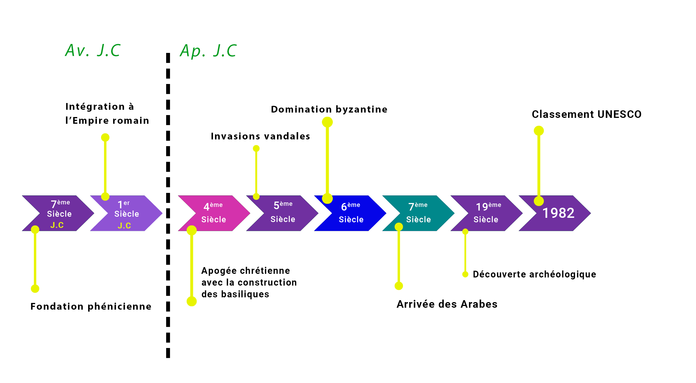

Bienvenue aux Ruines de Tipaza
Un Voyage au Cœur de l'Histoire Méditerranéenne
Plongez dans l'histoire fascinante des ruines de Tipaza, un site emblématique niché sur les rivages ensoleillés de la Méditerranée. Classé au patrimoine mondial de l'UNESCO, ce joyau archéologique témoigne de la richesse des civilisations qui ont marqué l'Algérie à travers les siècles.
Youtube : @ Arab Regional Centre for World Heritage
Découvrez une Histoire Millénaire
Tipaza fut autrefois une colonie phénicienne, puis un important comptoir romain. Ses vestiges racontent l'histoire d'un carrefour culturel où se mêlaient traditions locales, influences romaines, chrétiennes, et byzantines.

Chronologie de Tipaza
Un Lieu d'émerveillement
Marchez parmi les ruines majestueuses : le théâtre romain, les thermes, la basilique, et les cimetières paléochrétiens, tout en admirant la mer qui sert de toile de fond éternelle. Le site incarne l’harmonie entre l’histoire et la nature.

Ruines de Tipaza
Une Expérience Immersive
Ce site internet a pour vocation de vous guider à travers les trésors de Tipaza. Explorez des galeries d'images, des récits historiques, et des anecdotes captivantes qui donnent vie à ces pierres chargées de mémoire.
Que vous soyez passionné(e) d'histoire, amoureux(se) de la Méditerranée, ou simple curieux(se), les ruines de Tipaza vous invitent à une promenade intemporelle.
Bonne visite !
Une cité méditerranéenne au carrefour des civilisations
Située sur la côte méditerranéenne algérienne, à environ 75 km à l'ouest d'Alger, les ruines de Tipaza est un site archéologique d'une richesse exceptionnelle. Inscrite au patrimoine mondial de l'UNESCO en 1982, cette région, témoin des civilisations phénicienne, romaine, chrétienne et islamique, vous invite à un voyage temporel au cœur de l'histoire.
Niché dans un paysage marin enchanteur, ce lieu remarquable révèle les époques qui ont marqué son identité unique, offrant une plongée fascinante dans les millénaires passés.